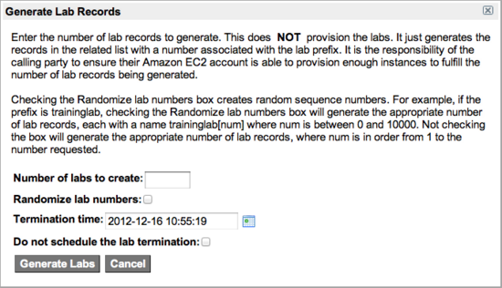

Amazon EC2 Integration for Training Partners in Cloud Provisioning
Contents
1 Overview
ServiceNow training partners can share Amazon EC2 images that the ServiceNow Training Department has prepared by activating the Orchestration - Amazon EC2 Integration for Training Partners plugin. These images can be used to run instances for training on the ServiceNow platform. This functionality is built on top of the ServiceNow Amazon EC2 application.
| |
Note: If you are using a version of ServiceNow earlier than Calgary, see previous version information in Amazon EC2 for Training Partners - Versions Prior to Calgary. |
2 Enhancements
2.1 Calgary
The following enhancement has been added in the Calgary release.
- Lab termination time: When you generate lab records, ServiceNow gives you the option of setting a termination date and time for the lab instance. This allows you to terminate the virtual machine when it is no longer needed, to avoid unnecessary cost.
3 Activating the Plugin
This feature requires the Orchestration - Amazon EC2 Integration for Training Partners plugin. Amazon EC2 for cloud provisioning is a feature of Orchestration, which is available as a separate subscription from the rest of the ServiceNow platform. To purchase an Orchestration subscription and have this plugin activated, contact your account manager.
4 Installed with the Plugin
The following new elements are installed by the Orchestration - Amazon EC2 Integration for Training Partners plugin.
4.1 Property
The glide.vm.ec2_lab_duration property sets the duration, in days, for all virtual lab instances (Calgary release). Lab instances are automatically terminated when they reach this limit. The default duration in the base system is 5 days. To configure this property, navigate to Amazon EC2 > Lab Management > Lab Properties.
4.2 Tables
| Table | Description |
|---|---|
| Lab [lab] | Stores the labs, which are expected to be one per class. |
| Lab link [lab_link] | Stores the individual lab instances, which are expected to be one per student. |
4.3 Business Rules
| Business Rule | Description |
|---|---|
| Update lab on status | Updates the State in the Lab link [lab_link] table when an instance state in the Computer [cmdb_ci_computer] table changes from pending install to installed or from installed to retired. |
| Prevent deleting with active labs | Prevents a lab from being deleted when the lab contains open instances. Users are notified to close any open instances before the lab is terminated. |
4.4 Script includes
| Script Include | Description |
|---|---|
| GenerateLabs | Generates the Lab link [lab_link] records for a lab. |
| EC2LabUtil | Helps check status to display appropriate UI actions. |
5 Step 1: Set Up Amazon EC2
To share ServiceNow training images, you must first acquire an Amazon EC2 account and perform the configuration tasks described in Configuring Amazon EC2. The last step in this process is to add the ServiceNow Training Account as a shared account. Contact the ServiceNow Training Department for details on receiving account numbers.
6 Step 2: Approve Images
After configuring EC2 and adding the Training Department account number, approve the training images. Task 1 is the only task required from this procedure.
7 Step 3: Set Up the Labs
- Navigate to Amazon EC2 > Lab Management > Labs and click New.
- Complete these fields in the form.
- Name: A unique and descriptive name for the lab.
- Notes: Optional information about the purpose and contents of the lab.
- Prefix: Prefix for the ID number of each lab. For example, if advadmin is the prefix, the individual labs are advadmin01, advadmin02, advadmin03, and so on.
- Image: Image the training department has provided for this lab, selected from the list of available images.
- Termination time is supplied when you generate and provision the labs.
- Click Submit.
- Repeat this procedure for each class that has a shared training image available.
{kind=link}
8 Step 4: Generate and Provision Labs
- In the lab record you just created, click Generate Lab Records under Related Links.
- In the dialog box that appears, enter the number of lab records to generate.
- Amazon EC2 accounts have an initial limit of 20 instances. To raise the limit of instances allowed to run simultaneously in your Amazon EC2 account, use this form: http://aws.amazon.com/contact-us/ec2-request/.
- For the purpose of partner training, clear the Randomize lab numbers check box.
- This control is intended for instances created by ServiceNow for training.
- Accept the default Termination time or select another date and time.
- The system calculates the termination time by adding the duration from the glide.vm.ec2_lab_duration property to the current date and time. The default lab duration in the base ServiceNow system is 5 days.
- Select the Do not schedule the lab termination check box to allow the lab to run indefinitely.
- This selection clears the Termination time field. Labs created in this state must be terminated manually.
- 
- Click Generate Labs to generate the lab records.
- After the lab records are created, verify that the number of labs looks correct.
- Click Provision Labs under Related Links.
- This action provisions the requested number of lab instances and creates a scheduled job to terminate the labs if you selected a termination time. A status message at the top of the page advises that provisioning has started. The requester receives an email when the provisioning is complete. Do not click the link again to avoid creating an unwanted set of lab instances.
- When the labs are provisioned, the lab links contain the Amazon EC2 IP addresses.
- You might have to reload the form to see these.
- To access a running lab instance, enter either the Amazon EC2 IP address or the EC2 DNS in the address line of a browser.
- To terminate a lab for which no termination date was scheduled, open the lab record and click Terminate lab under Related Links.
{kind=link}
9 Step 5: Configure Amazon EC2 Security Group
To make the shared ServiceNow training images to be visible:
- Log into your Amazon EC2 account via http://aws.amazon.com/.
- Select the EC2 tab.
- Under Network & Security, select Security Groups.
- Edit the default security group’s inbound rules to add ports 80 and 443.
- Apply the change.
{kind=link}
9.1 Configuring a Custom DNS
To provide URLs to students based on the labs' unique names, customize the Update Lab DNS ServiceNow workflow as follows:
- Open the Update Lab DNS workflow and check it out for edit.
- For instructions on using workflows, see Creating a Workflow.
- Replace the Run Script activities titled DNS Update for Provisioning and DNS Update for terminating with Orchestration activities to update your DNS server appropriately.
- The necessary data is available in an array of objects in the variable workflow.scratchpad.amazon_instances, where each object has the following fields:
- ec2_ip: The Amazon EC2 IP address
- ec2_dns: The Amazon EC2 DNS
- custom_dns: The custom name on the Lab Link form
- Configure your DNS to map the custom_dns names to their Amazon EC2 IP addresses.
- For example, adminoct05 with an Amazon IP address of 1.2.3.4 forms the URL https://adminoct05.mycompany.com and directs it to the appropriate lab instance.
Contents > Deliver > IT Operations Management > Cloud Provisioning > Amazon EC2 for Cloud Provisioning